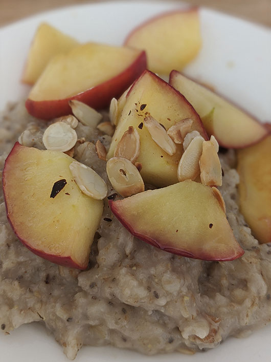

Skip to Content
Apple Cinnamon Oatmeal

Ingredients
- ¼ of an Apple
- ½ cup of rolled oats
- Water
- 1 – 1 ½ tsp of cinnamon (to taste)
- Peanut butter (as topping)
- Favorite milk (I use oat)
Instructions
- Cut the ¼ of the apple into cubes/small pieces
- Put the rolled oats in a microwave-safe bowl
- Add the apples and cinnamon to the bowl
- Fill bowl with water until just above the oats
- Place in microwave for 2 minutes, then stir
- If more time is needed, use 30 second increments until apples are soft and oats are cooked
- Put a spoonful of peanut butter on top of the oats, fill bowl with as much milk as you like
- I like the warm/cold combo so I add enough milk to make it similar to cereal
- ENJOY!